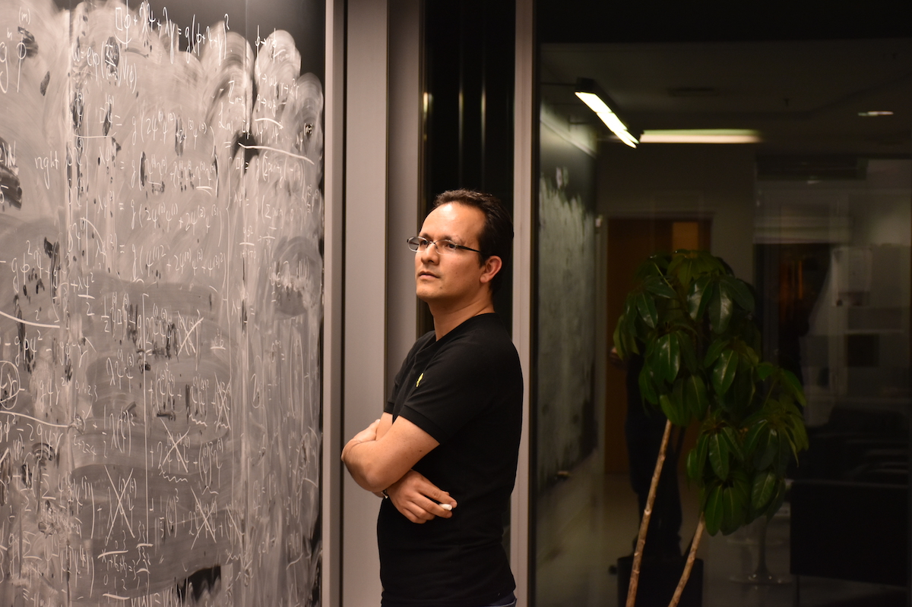

Desde Salamanca hasta el Event Horizon Telescope: un cazador de agujeros negros (Tlamatiliztli Blog).
You can read this article (in Spanish) here.

Salmantino es parte de una hazaña ‘estelar’ (by Periodico Correo).
You can read this article (in Spanish) here.
Salmantino participa en captura de Agujero Negro (by Meganoticias Salamanca).
Salmantino que participó en el proyecto Event Horizon Telescope cuenta su historia (by El Salmantino).